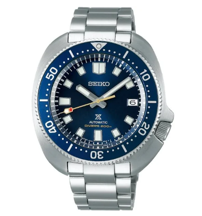

Apa yang dimaksud dengan jam analog?
Jam tangan analog merupakan jam tangan yang menampilkan “clock face” dalam bentuk 12 jam, dilengkapi dengan jarum jam, jarum menit, dan jarum penunjuk detik. Ada jam tangan analog yang menggunakan angka biasa, ada juga yang menggunakan angka romawi.